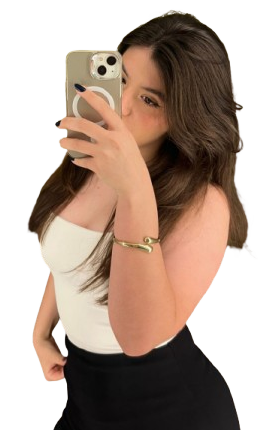

CONTATOS

geehzoca@gmail.com
@eugehvicz
14-*****-****
Técnica em Desenvolvimento de Sistemas
Sou uma estudante do ensino médio e tenho 16 anos. Além disso, curso Análise e Desenvolvimento de Sistemas (ADS). Sou uma pessoa dedicada aos estudos e busco constantemente aprender coisas novas, ftanto dentro quanto fora da sala de aula. Tenho interesse em expandir meus conhecimentos em diferentes áreas, principalmente naquelas que podem contribuir para o meu futuro acadêmico e profissional.
Minhas habilidades, destaco a experiência com HTML e CSS, que me permite desenvolver páginas e aplicar conceitos de programação voltados para o design e a funcionalidade da web. Além disso, tenho conhecimento em inglês, o que amplia minhas possibilidades de aprendizado e comunicação em diferentes contextos. Outra habilidade que considero importante é a de cozinhar. Gosto de preparar receitas e explorar a criatividade na cozinha
geehzoca@gmail.com
@eugehvicz
14-*****-****